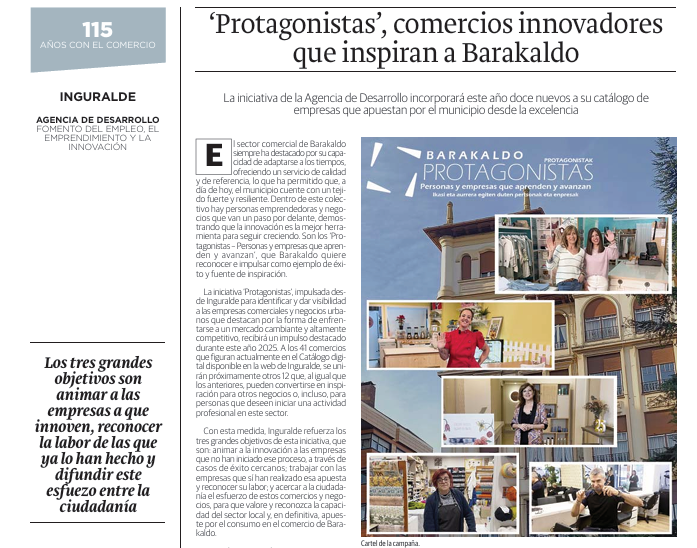
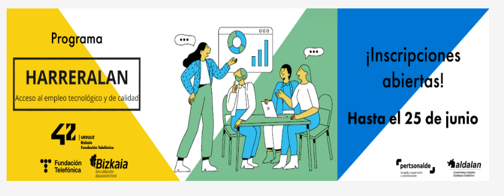

Trabajo en EITB
Aquí se muestran algunos de los trabajos realizados para EITB. Si pulsas en las imágenes, se abrirán en pantalla completa.


Reel promocional para @posicioncero en Instagram.
Centro en la isla de Fuerteventura dedicado a la práctica de
Técnicas Corporales y Terapias Alternativas comprometido con el
Autocuidado, el Crecimiento Personal y el Desarrollo de
la Conciencia Individual y Social.
Reel para @ojala_shop_ en Instagram. Por su participación
en la campaña Protagonistas de Barakaldo
Reel promocional para @bilbofoodie en Instagram.
De la participación en el Show Cooking de Bilbao.
Reel promocional para redes sociales sobre del lanzamiento de
los productos de primavera en La Tía Úrsula
Reel promocionando el Euskaraldia 2025 en Inguralde y Barakaldo.
Reel que promociona el Dia internacional de la Mujer
y la Niña en la ciencia en Barakaldo.
Reel para Bilbao Zerbitzuak sobre el Show Cooking
realizado por @adrianmchef10 en Instagram en el Mercado de la Ribera.
Documental para el programa de Helmuga, sobre Walking Football que se trata de una variante del fútbol tradicional diseñada para personas mayores de 50 años, donde está prohibido correr.
Video entrevista emitido en Eitb 1 para la competición de remonte Jai Alai Winter Series en 2022.
Documental para el programa de Helmuga, sobre Karim el Hayani. Uno de los referentes mundiales del “barefoot running” y ostenta diversos récords Guinness del Mundo de correr descalzo en diferentes distancias y terrenos.
Video entrevista emitido en Eitb 1 para la competición de remonte Jai Alai Winter Series en 2022.
Video entrevista emitido en Eitb 1 para la competición de remonte Jai Alai Winter Series en 2022.
Video entrevista emitido en Eitb 1 para la competición de remonte Jai Alai Winter Series en 2022.
Video entrevista emitido en Eitb 1 para la competición de remonte Jai Alai Winter Series en 2022.
Video entrevista emitido en Eitb 1 para la competición de remonte Jai Alai Winter Series en 2022.
Video entrevista emitido en Eitb 1 para la competición de remonte Jai Alai Winter Series en 2022.
Video entrevista emitido en Eitb 1 para la competición de remonte Jai Alai Winter Series en 2022.
En el corazón de Barakaldo se encuentra Ojalá, una tienda donde fusionan moda y creatividad y bisutería con simbología identitaria propia. Donde destaca la creación de productos personalizados, asi como de encontrar una moda que fuera accesible, única y con identidad.
Hidra Estética y Bienestar es un espacio situado en Barakaldo, especializado en el cuidado de la piel y la silueta, donde la profesionalidad y la cercanía marcan la diferencia. El centro se ha transformado y especializado en tratamientos faciales y
corporales de vanguardia.
Lula’s Bakery es mucho más que una pastelería. Ubicada en Barakaldo, tienen una gran cantidad de opciones, desde pasteles tradicionales, hasta recetas innovadoras y aptas para personas veganas y con intolerancias. Con un enfoque especial para bodas y eventos.
Documental sobre la carrera de Javier Santurtún. Artista y escultor, por sus 50 años como artista, que celebró en 2024. Su
dedicación y pasión por el arte han dejado una huella significativa, no solo en su obra personal, sino también en los proyectos
comunitarios en los que ha participado. En este caso, sobre los proyectos realizados en su Barakaldo natal.
Cuenta la historia de FrusSurf. Una tienda de surf situada en Barakaldo, creada por Josina y Manolo donde se destaca su amplia
variedad de productos, como el trato cercano y personal de dos hermanos amantes de las olas.
En el centro de Barakaldo se encuentra Los Jamones, un bar con más de setenta años de historia que forma parte del alma
del barrio.Su compromiso se refleja en la calidad y variedad de la carta, así como en el vínculo cálido y familiar que mantienen
con sus clientes, haciendo de Los Jamones un lugar de encuentro para todo el vecindario.
Jandameida es un taller de cerámica ubicado en el barrio de Rontegui. Cada objeto, desde una taza hasta unos pendientes
de porcelana, nace de sus manos y conserva las huellas del proceso. Es un espacio que busca conciliar la vida creativa con la vida cotidiana, y que combina la producción artesanal con la apertura al entorno.
Paraíso Jone Love es un comercio de venta situado en Barakaldo de productos eróticos, orientación afectivo - sexual y servicios de entretenimiento.
En Barakaldo, se encuentra un bar que destaca por su mezcla de tradición y actualidad: el Bar Arana. Ofrece una cocina sencilla y natural, con tostas y pintxos que se han convertido en su sello distintivo.
Úrsula es una marca de moda y decoración para la casa, lencería y pijamería, que ofrece personalización y trabajos a medida en cortinas, estores y alfombras. Nació en el barrio de San Vicente de Barakaldo en 1989 donde abrieron su primera tienda, y posteriormente han ido montando en Leioa, Deusto y Sestao, cuatro en total.
Video que habla sobre el centro de empleo de Inguralde situado en Barakaldo, y todo lo que ofrece. Asesoramiento y horientación laboral, asi como en la busqueda de empleo o de formaciones certificiadas.




